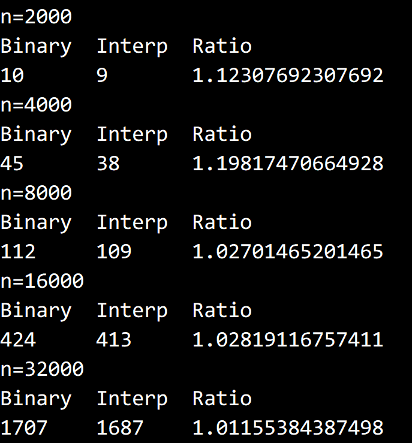

© 2022 《算法（第四版）》C# 题解 | Provided By 沈星繁
搜索解答
目前已完成到 3.2
3.1.24
上次更新：2022-02-18
发现了题解错误/代码缺陷/排版问题？请点这里：如何：提交反馈 。
解答
FrequencyCounter 的官方实现：https://algs4.cs.princeton.edu/31elementary/FrequencyCounter.java.html
二分查找总是与中间值进行比较，现在改为与数组中第 x% 位置上的元素比较。
具体而言， 代表数组在均匀情况下目标值 的相对位置（一个比率，在数组第 x% 的位置上）。
那么相对应的下标就等于 。
用这个式子代替原来的 即可。
不难看出这种方法对于分布相对均匀的数组比较有利，相对于二分查找而言迭代次数会少很多。
但如果数组分布不够均匀，也可能表现出不如二分查找的性能。
实验结果也证实了这一判断，就随机数组而言，插值查找相对于二分查找只有 1% 左右的性能提升。

代码
SearchCompare 在书中没有出现，但可以简单的实现为调用 FrequencyCounter 并计时的方法：
public static long Time<TKey>(IST<TKey, int> st, TKey[] keys)
{
Stopwatch sw = new Stopwatch();
sw.Start();
FrequencyCounter.MostFrequentlyKey(st, keys);
sw.Stop();
return sw.ElapsedMilliseconds;
}由于这里需要使用数字而非字符串作为键值，需要对官方给出的 FrequencyCounter 做一些修改：
public static TKey MostFrequentlyKey<TKey> (IST<TKey, int> st, TKey[] keys)
{
foreach (TKey s in keys)
{
if (st.Contains(s))
st.Put(s, st.Get(s) + 1);
else
st.Put(s, 1);
}
TKey max = keys[0];
foreach (TKey s in st.Keys())
if (st.Get(s) > st.Get(max))
max = s;
return max;
}